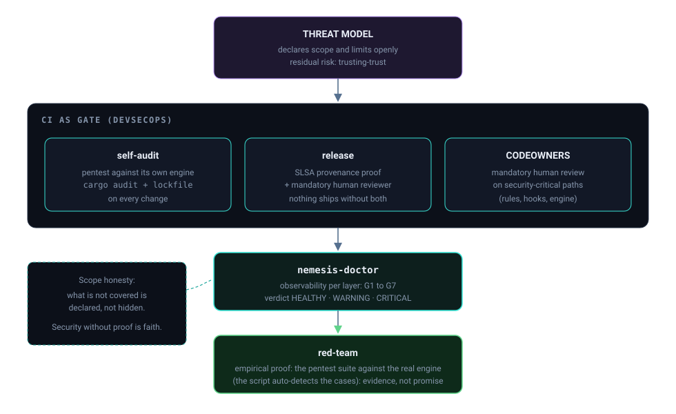

Início/Conceitos/10 · Processo e honestidade
conceito 10 · processo e DevSecOpsProcesso e honestidade: threat model, DevSecOps, doctor e red-team
Uma ferramenta de segurança vale o que vale o processo em volta dela. Os limites são declarados com honestidade: o CI vira gate (self-audit, SLSA, pin de SHA, CODEOWNERS), o doctor dá observabilidade e o red-team valida de forma adversarial.
Os não-objetivos e o risco residual são declarados (a conta do mantenedor, o problema do trusting-trust: um scanner não detecta backdoor em si mesmo). Contra isso: o self-audit roda o pentest como gate de CI mais cargo audit e exige Cargo.lock; o release separa build de publicação, exige reviewer e anexa proveniência SLSA; o CODEOWNERS trava os caminhos críticos. O nemesis-doctor dá o quadro da postura por grupos de checagem, e o red-team (pentest) prova que o motor ainda detecta.

Do zero: os conceitos de processo
Threat model é declarar o que você defende, contra quem, e o que está fora de escopo, honestidade sobre limites vale mais que promessa de segurança total. DevSecOps é embutir segurança na esteira de build, não depois. SLSA é um framework de integridade da cadeia: a attestation de proveniência prova que um artefato veio de um repo/commit/workflow específico. CODEOWNERS exige revisão de dono nos arquivos sensíveis. Red-teaming é atacar o próprio sistema de propósito para validar a defesa. O doctor é a observabilidade: um diagnóstico que reporta o estado real de cada camada.
Por que importa
Um comprometimento caro e ruidoso é preferível a um silencioso. Nenhum desses controles dá garantia absoluta, e isso fica dito abertamente, mas juntos eles tornam um ataque à cadeia algo que precisa passar por revisão humana, proveniência e um gate que prova que o scanner ainda funciona. O honesto é assumir o risco residual (a conta do mantenedor, o trusting-trust) e desenhar para encarecer o ataque, não fingir que ele não existe.
Como se correlaciona
O threat model define o alvo; o self-audit e o release impõem o gate; o CODEOWNERS fecha o "PR malicioso mergeado sem análise"; o doctor observa; o red-team valida. É o mesmo princípio do grupo 9 aplicado ao próprio projeto: camadas que se reforçam, com honestidade sobre o que cada uma não cobre. E proteger o Nemesis fecha o ciclo do grupo 7 (o agente, e o repo, são superfície de ameaça).
Como o Nemesis aplica
O self-audit declara o limite no próprio arquivo (trusting-trust: ele não se autovalida) e por isso só vale acoplado a CODEOWNERS mais branch protection:
📄 .github/workflows/self-audit.yml:10-17 · limite honesto declarado# LIMITE HONESTO (trusting-trust): este workflow NAO se autovalida.
# Por isso SO vale acoplado a CODEOWNERS + branch protection (revisao humana
# obrigatoria nos arquivos trust-critical).O pentest é o gate que prova que o motor ainda detecta:
📄 .github/workflows/self-audit.yml:85-89 · pentest como gate de CI# GATE · Pentest do Nemesis deve estar APROVADO
bash .nemesis/pentest-nemesis-control/nemesis-defender/run-pentest.shO release separa build de publicação, zera permissões por padrão e anexa proveniência SLSA:
📄 .github/workflows/release.yml:8-16 · SLSA, draft, environment com reviewer# permissions: {} global; build NAO pode publicar release.
# job 'release' num Environment com required reviewer; cargo build --locked
# attestation de proveniencia (SLSA): prova que o tarball veio DESTE repo/commit.O CODEOWNERS trava os caminhos que definem a própria segurança (um diff ali poderia "cegar" o scanner):
📄 .github/CODEOWNERS:18-21 · o motor de detecção sob revisão obrigatória/.nemesis/nemesis-defender/src/ @feryamaha
/.nemesis/denylist/ @feryamaha
/.nemesis/hooks/ @feryamahaO doctor organiza a checagem em grupos (os módulos compile, unit_tests, ebpf, daemon, scaffold, inventory, pentest), e o --quick pula os pesados:
pub mod compile; pub mod daemon; pub mod ebpf; pub mod inventory;
pub mod pentest; pub mod scaffold; pub mod unit_tests;
// --quick: pula grupos pesados (G1 compile, G2 testes, G7 pentest)Decisões e limites
Os números do pentest divergem entre as fontes do repo: o cabeçalho do run-pentest.sh diz "184 testes, 26 módulos", enquanto o self-audit.yml e o AGENTS.md citam "194/194". O script auto-detecta e falha se houver gap ou falso-positivo, então o número é dinâmico; nenhum valor é fixado aqui (poderia defasar) e a divergência fica apontada. No doctor, o código nomeia G1 (compile), G2 (testes) e G7 (pentest); os demais grupos são descritos pelos módulos de checks/, sem rótulo inventado.
O self-audit não faz self-scan do fonte: o código do scanner contém, legitimamente, as próprias assinaturas de ataque, e auto-escanear daria quase 100% de falso-positivo. O self-scan de conteúdo vale só para conteúdo externo. E CODEOWNERS, draft e environment só têm efeito com a branch protection ligada no GitHub; sem isso são intenção declarada, e o material aponta isso.
Auto-checagem
O que é o problema do trusting-trust e como ele limita o self-audit?
Um scanner não consegue detectar um backdoor em si mesmo de forma confiável. Por isso o self-audit não se autovalida e só vale acoplado a revisão humana (CODEOWNERS + branch protection).
Qual a diferença entre o checksum e a attestation de proveniência?
O .sha256 garante integridade (o arquivo não mudou). A attestation SLSA garante autenticidade (o arquivo veio deste repo/commit/workflow). Integridade não é autenticidade.
Por que não fixar o número de testes do pentest no material?
Porque o script auto-detecta e as fontes do repo divergem (184/26 no cabeçalho, 194 no self-audit). Fixar um número defasaria; o honesto é descrever o gate e apontar a divergência.
Para ir além
Citações verificadas contra o repositório. Voltar ao índice.